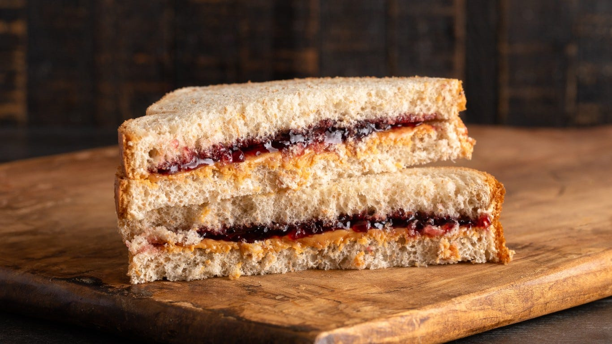

PBJ

A beautifully sliced peanut butter AND jelly sandwhich with the perfect pb to jelly ratio
Its a week before payday, your stomach is sounding like a v8 engine, so you check your fridge.
Not to your surprise (cause your broke), its practically empty. You sit and ponder for 38 seconds
about what you could eat to fulfill your craving and hunger; a lightbulb goes off...
PEANUT BUTTER JELLY TIME, accompanied with a cold glass of (almond) milk cause I dont want to
spend more time in the bathroom than I already do. To make it, you will need:
- Bread
- Peanut butter
- Jelly
- Milk
- Cut crust if you choose or if you're still 4y/o
Steps:
- For a sandwhich, you need 2 slices of bread, so take them out in pairs. Toast if desired.
- Using a butterknife or back of spoon, spread the peanut butter evenly across both slices of bread
- Add a thin layer of jelly to both slices, or a decent layer on one.
- Pour a glass of milk
- Cut the crust if needed